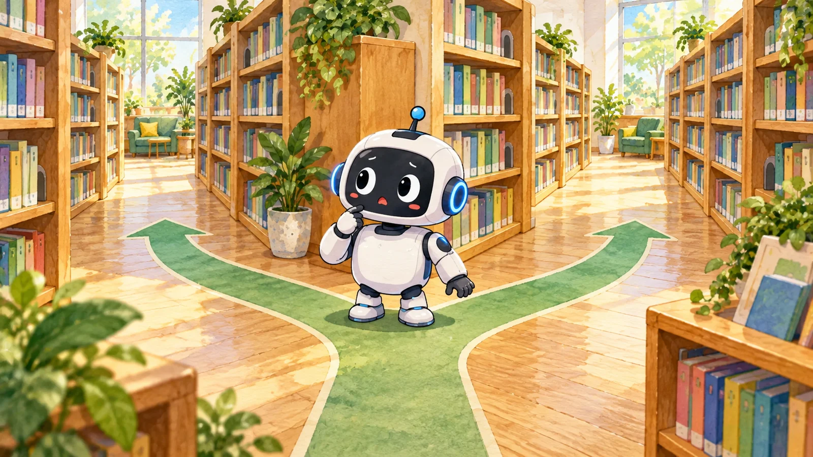
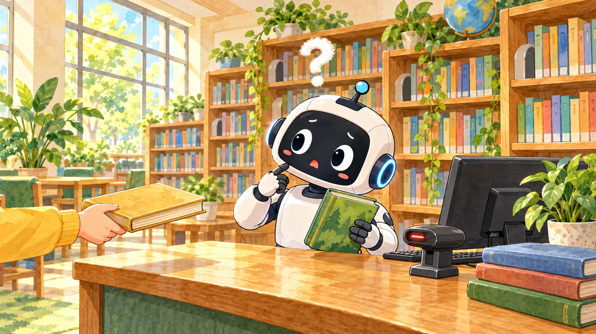
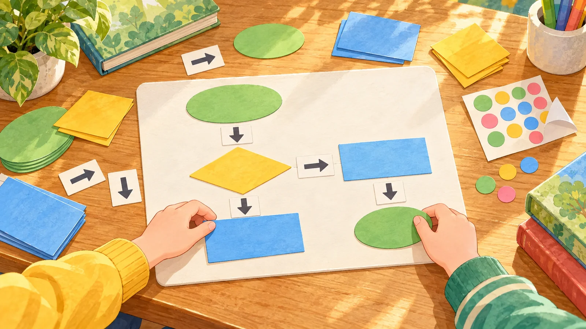
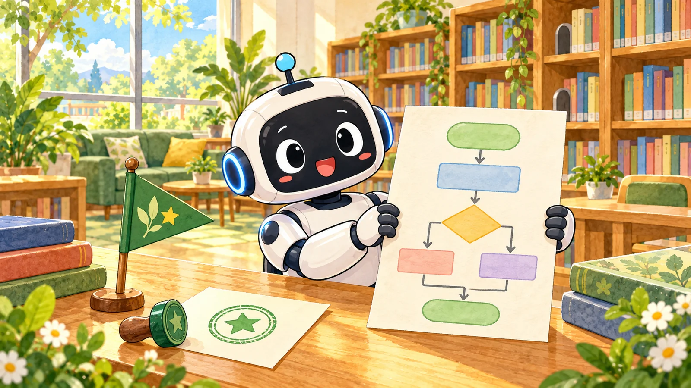

순서도 따라가며 끝 맞히기
이 책이 어느 끝으로 갈지 짚어요
끝을 먼저 짚고 굴려 보기를 눌러요. 미션은 세 개예요.

미션 1 · 끝 짚기
책 두 권을 굴려 봐요. 먼저 끝을 짚고, 굴려 보기를 눌러요.
이번 책
어느 끝일까요
순서도
지나온 판
두 끝 가운데 하나를 짚어요

미션 2 · 함정 찾기
이 순서도에는 잘못된 곳이 있어요. 두 책을 모두 굴려서 찾아봐요.
바라는 끝: 빌릴 수 있는 책은 책 건네기로, 빌릴 수 없는 책은 예약 방법 안내로 가야 해요.
순서도
두 책을 굴려요
바라던 끝에 못 닿은 책은?

미션 3 · 내가 잇기
내 순서도
칸을 눌러 바꿔요
두 경우를 굴려요

알아 둘 것마름모는 물음이라서 예와 아니요로 길이 갈려요. 시험할 때는 두 경우를 다 굴려 봐야 해요.
그림 일부는 생성형 AI로 만들었어요